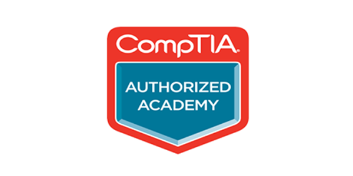

AWS Academy
O currículo da AWS Academy foi projetado para ser entregue ao longo de um semestre e ajuda os alunos a desenvolverem conhecimentos técnicos em computação em nuvem e os prepara para a Certificação AWS.

Cisco Networking Academy
A educação que a Cisco Networking Academy oferece tem o poder de mudar as vidas das pessoas, promover carreiras e transformar comunidades. A Cisco Networking Academy se tornou, rapidamente, um movimento que está transformando comunidades inteiras e revelando vários talentos para fomentar a transformação empresarial e assumir problemas globais.

CompTIA
O Programa de Parceria da Academia da CompTIA fornece ferramentas e recursos valiosos para ajudar as escolas a recrutar, treinar, certificar e aprimorar as habilidades de seus alunos em TI. O programa da Academia CompTIA é projetado para ajudar as escolas a promover a certificação e melhorar as oportunidades de carreira dos estudantes.